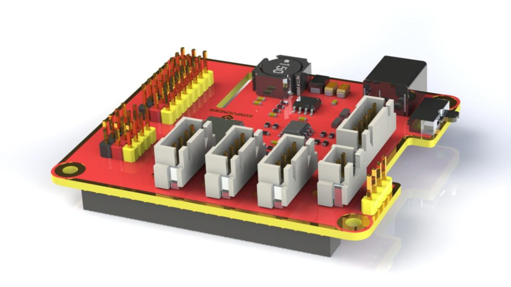
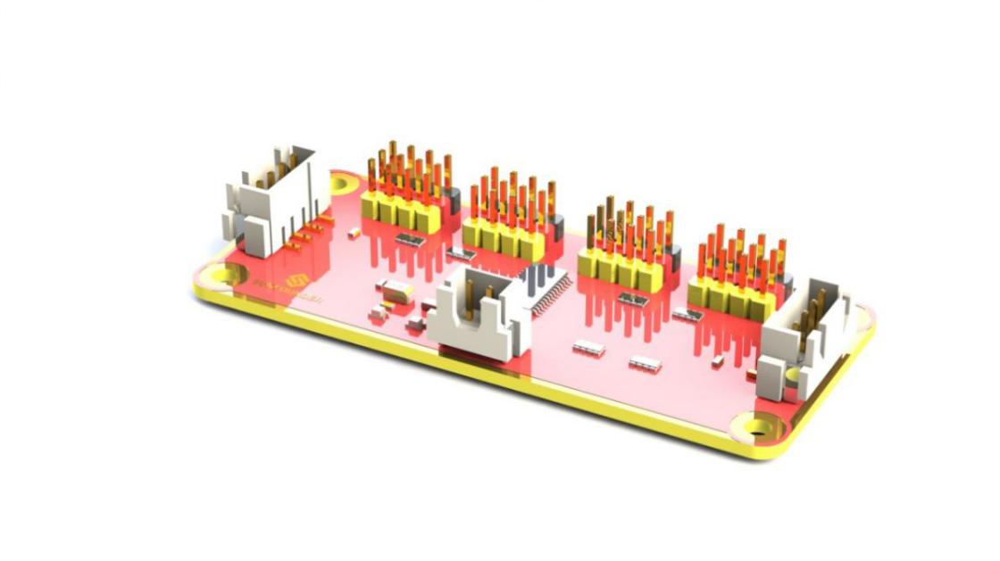
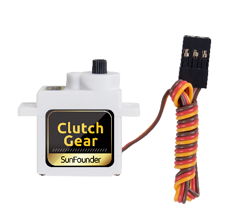

Modules¶
Robot HATS¶
Robot HATS is a specially-designed HAT for a 40-pin Raspberry Pi and can work with Raspberry Pi 3 model B, 3 model B +, and 4 model B. It supplies power to the Raspberry Pi from the GPIO ports. Thanks to the design of the ideal diode based on the rules of HATS, it can supply the Raspberry Pi via both the USB cable and the DC port thus protecting it from damaging the TF card caused by batteries running out of power. The PCF8591 is used as the ADC chip, with I2C communication, and the address 0x48.

1. Digital ports: 3-wire digital sensor ports, signal voltage: 3.3V, VCC voltage: 3.3V.
2. Analog ports: 3-wire 4-channel 8-bit ADC sensor port, reference voltage: 3.3V, VCC voltage: 3.3V.
3. I2C ports: 3.3V I2C bus ports
4. 5V power output: 5V power output to PWM driver.
5. UART port: 4-wire UART port, 5V VCC, perfectly working with SunFounder FTDI Serial to USB.
6. Motor control ports: 5V for motors, direction control of motors MA and MB and a floating pin NC; working with motor driver module.
7. Switch: power switch
8. Power indicators: indicating the voltage – 2 indicators on: >7.9V; 1 indicator on: 7.9V~7.4V; no indicator on: <7.4V. To protect the batteries, you're recommended to take them out for charge when there is no indicator on. The power indicators depend on the voltage measured by the simple comparator circuit; the detected voltage may be lower than normal depending on loads, so it is just for reference.
9. Power port: 5.5/2.1mm standard DC port, input voltage: 8.4~7.4V (limited operating voltage: 12V~6V).
PCA9865¶
PCA9685 16-channel 12-bit I2C Bus PWM driver. It supports independent PWM output power and is easy to use 4-wire I2C port for connection in parallel, distinguished 3-color ports for PWM output.

1. PWM output ports: 3-color ports, independent power PWM output port, connect to the servo directly.
2 & 3. I2C port: 4-wire I2C port, can be used in parallel. Compatible with 3.3V/5.5V
PWM power input: 12V max.
LED: power indicator for the chip and for the PWM power input.
Motor Driver Module¶
The Motor Driver module is a low heat generation one and small packaged motor drive.

1. Power and motor control port: includes pins for supplying the chip and the motors and controlling the motors' direction
2. PWM input for the motors: PWM signal input for adjusting the speed of the two motors
3. Motor output port: output port for two motors
Line Follower Module¶


The TCRT5000 infrared photoelectric switch adopts a high transmit power infrared photodiode and a highly sensitive phototransistor. It works by applying the principle of objects' reflecting IR light – the light is emitted, then reflected, and sensed by the synchronous circuit. Then it determines whether there exists an object or not by the light intensity. It can easily identify black and white lines.
In other words, the different conduction levels of the phototransistor when it passes over black and white lines can generate different output voltages. Therefore, all we need to do is to collect data by the AD converter on the Atmega328 and then send the data to the master control board via I2C communication.
This module is an infrared tracking sensor one that uses 5 TRT5000 sensors. The blue LED of TRT5000 is the emission tube and after electrified it emits infrared light invisible to human eye. The black part of the sensor is for receiving; the resistance of the resistor inside changes with the infrared light received.
Light Follower Module¶


Phototransistor, also known as photodiode, is a device that converts light to current. Currents are generated when photons are absorbed in the P-N junction. When a reverse voltage is applied, the reverse current in the device will change with the light luminance. The stronger the light is, the larger the reverse current will be. Most phototransistors work this way.
The ADC chip on the HATS can receive 8-bit analog signals and convert them into integers, and transfer the signals to the Raspberry Pi. The Raspberry Pi will analyze the data to determine the direction of the brightest area (the light source), and further control the steering and movement of the four wheels to approach the light source.
You may need a light focused flashlight in this experiment. At least, the spot size of the torch should not be too big to reach all the 3 phototransistors on the module at the same time. Well, you can also shine the flashlight closer to the car to get a small spot size.
Ultrasonic Obstacle Avoidance Module¶

Principle
Supply a short 10μS pulse to the Trig to start the ranging, and then the module will send out an 8 cycle burst of ultrasound at 40 kHz and raise its echo back. The echo is a distance object that is pulse width and the range in proportion. You can calculate the \(\text{Range}\) through the \(\text{Time Interval}\) between sending trigger signal and receiving echo signal.
Formula:
Or:
Or:
We suggest to use over 60ms measurement cycle, so as to prevent trigger signal to the echo.
SunFounder SF006C Servo¶
The SunFounder SF0180 Servo is a 180-degree three-wire digital servo. It utilizes PWM signal of 60Hz and has no physical limit – only control by internal software to 180 degrees at most.
Electrical Specifications:


Copyright Notice¶
All contents including but not limited to texts, images, and code in this manual are owned by the SunFounder Company. You should only use it for personal study, investigation, enjoyment, or other non-commercial or nonprofit purposes, under the related regulations and copyrights laws, without infringing the legal rights of the author and relevant right holders. For any individual or organization that uses these for commercial profit without permission, the Company reserves the right to take legal action.